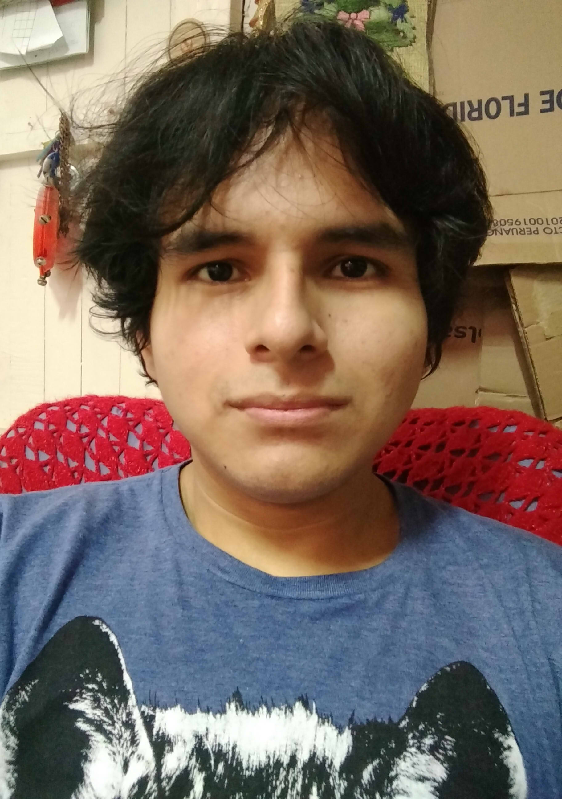
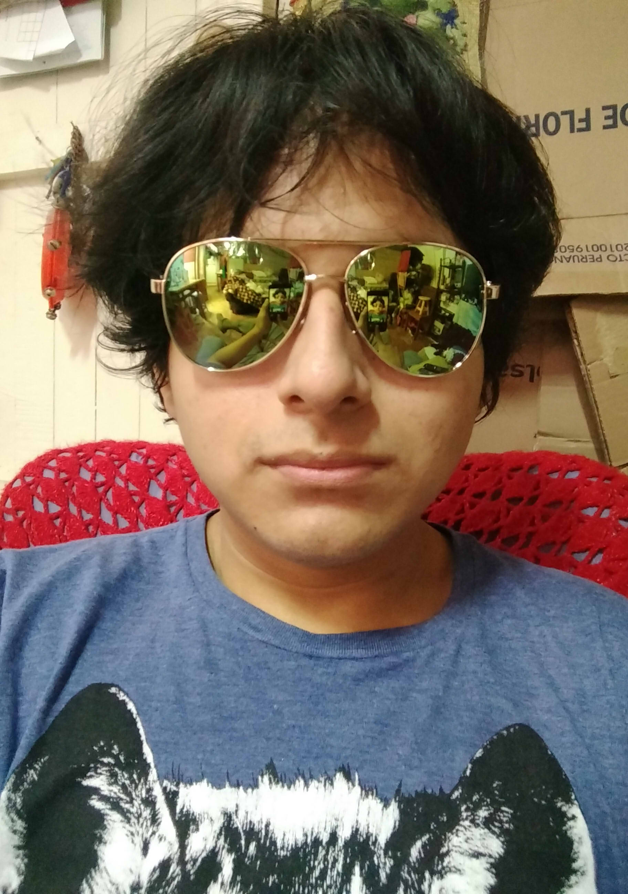
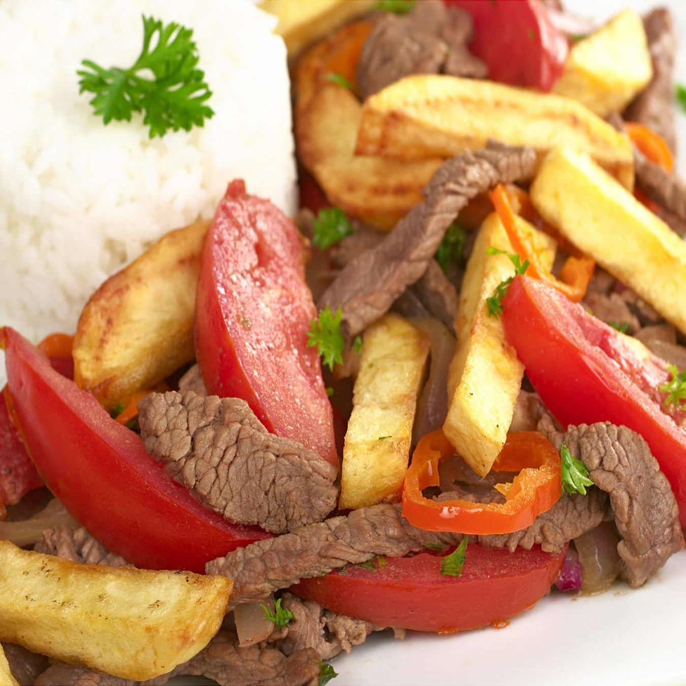

Nilton Fernando Estrada Figueroa

Buenas tardes, profesor.
Sobre mi
Mi nombre es Nilton Fernando Estrada Figueroa, nací el 18 de mayo del 2001 a las 06:45am en el hospital Carrion del Callao. Actualmente soy estudiante de Ingenieria de Sistemas en la UPN.
Sobre mi

Hola profe.

Mis Pasatiempos
En mis ratos libres suelo dibujar, escuchar música, jugar videojugos, ponerme al día con alguna serie, ver unos momazos en el facebook, ver alguna película, ordenar mis cosas, y para desestresarme hago ejercicio.
Cosas Que Me Gustaria Hacer
- Aprender a Cocinar.
- Ir a Machu Picchu.
- Viajar a Algún País.
- Escapar de Latinoamerica.
- Minar Bitcoins.
Animales favoritos
Me gusta todo tipo de animales desde los mamifieros hasta los reptiles, entre mis favoritos estan los perros, gatos, capibaras y tortugas.
Comidas Favoritas
Comidas Favoritas
- Lomo Saltado
- Causa Rellena
- Bistec a La Parrilla
- Chicharron de Calamar y Pescado
- Frejoles con Huevo Cocido
Redes Sociales
Redes Sociales
- Facebook: Nilton Fernando Estrada Figueroa.
- Twitter: No tengo.
- Instagram: Tampoco tengo.
- Gmail: niltonestrada689@gmail.com
****************************